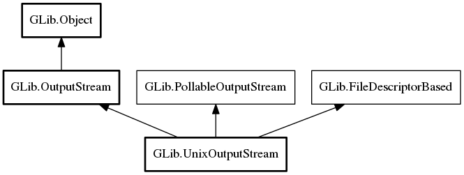

UnixOutputStream
Object Hierarchy:
Description:
Namespace: GLib
Package: gio-unix-2.0
Content:
Properties:
Creation methods:
Methods:
Inherited Members:
All known members inherited from class GLib.OutputStream

All known members inherited from class GLib.Object
All known members inherited from interface GLib.PollableOutputStream
All known members inherited from interface GLib.FileDescriptorBased